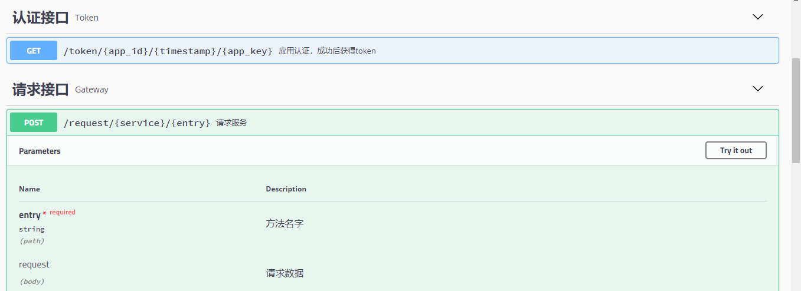

服务网关
在复杂的企业IT系统环境中，各种不同的业务系统（应用）可能是用不同的技术方案（异构）独立建设的，但是由"微服务"所代表的核心业务逻辑在应用之间应该是一致并且可以被"共享"的。在这种环境下，"微服务"已经不再仅仅是单一应用内的架构模式，而是可以成为企业内保障关键业务能力的"中台"系统。
UBSI API Gateway（服务网关）为企业内的各种异构应用访问"微服务"提供了"统一"的接口及管控机制，逻辑架构如下：

UBSI-Gateway是一个独立的Web应用（WebApp，但不包含前端界面），通过rest-api为其他应用或异构系统提供UBSI微服务的访问能力。

UBSI-Gateway为第三方应用提供了丰富的访问策略，包括：
- 应用认证、接口/主机授权
- 路由规则
- 限流策略
- 流量镜像/转发（分流）
- 接口仿真及缓存
- 访问统计及日志
UBSI-Gateway通过 微服务rewin.ubsi.gateway 来存取访问策略及数据，管理人员可以通过UBSI治理工具来配置这些策略。

UBSI-Gateway支持多实例分组部署，不同分组可以配置不同的访问策略。
网关的获取及运行
可以在 https://ubsi-home.github.io/download 下载UBSI-Gateway的最新版本：rewin.rest.ubsi.gateway-2.3.0.jar，该版本基于SpringBoot 2.6.6。
启动配置
网关运行的配置文件为application.properties，默认内容如下：
### 初始的URL路径(SpringBoot2) server.servlet.context-path=/gateway spring.mvc.view.prefix=/ spring.mvc.view.suffix=.html ### Web Server监听端口 server.port=8090 ### 网关实例的分组 ug.group=ubsi-gate ### 应用令牌的过期时间(分钟数) ug.token-expire=120 ### 默认的远程主机访问权限 ug.acl.remote=true ### 默认的服务访问权限 ug.acl.service=true ### 是否验证Token的合法性 ug.token.check=true
UBSI Consumer配置
网关运行时需要正确配置 rewin.ubsi.consumer.json，样例如下：
{ "io_threads": 0, "timeout_connect": 5, "timeout_request": 10, "timeout_reconnect": 600, "redis_host": "{redis-server-address}", "redis_port": 6379, "redis_conn_idle": 4, "redis_conn_max": 16 }
网关启动
java -jar rewin.rest.ubsi.gateway-2.3.0.jar查看API文档
http://{gateway-host}:8090/gateway/swagger-ui.html查看微服务请求参数的JSON编码格式
http://{gateway-host}:8090/gateway/help.html